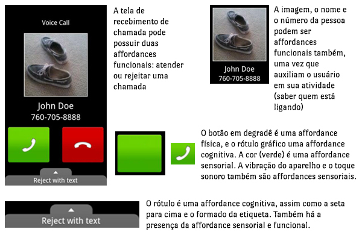

Interação humano computador
IHC tem por objetivo principal fornecer aos pesquisadores e desenvolvedores de sistemas explicações e previsões para fenômenos de interação usuário-sistema e resultados práticos para o design da interface de usuário. É o conjunto de características com o qual os utilizadores interagem com as máquinas, dispositivos, programas de computador ou alguma outra ferramenta complexa (ler Nota 1).
Nota 1. Avaliação de interface
A avaliação da interface tem como objetivos gerais validar a eficácia e a eficiência da usabilidade, conforme as tarefas que são realizadas pelos usuários e os recursos empregados tais como tempo, quantidade de erros, passos desnecessários, busca de ajuda, etc.
Dependendo da fase do projeto, a avaliação pode ser formativa (ou construtiva), que pode ser efetuada ao longo de todo o processo de
Tecnologia da informação e comunicação
Necnologia da informação e comunicação (TIC) pode ser definida como um conjunto de recursos tecnológicos, utilizados de forma integrada, com um objetivo comum. As TICs são utilizadas das mais diversas formas, na indústria (no processo de automação), no comércio (no gerenciamento, nas diversas formas de publicidade), no setor de investimentos (informação simultânea, comunicação imediata) e na educação (no processo de ensino aprendizagem, na Educação a Distância).
O desenvolvimento de hardwares e softwares garante a operacionalização da comunicação e dos processos decorrentes em meios virtuais. No entanto, foi a popularização da internet que potencializou o uso das TICs em diversos campos.
Através da internet, novos sistemas de comunicação e informação foram criados, formando uma verdadeira rede. Criações como o e-mail, o chat, os fóruns, a agenda de grupo online, comunidades virtuais, web cam, entre outros, revolucionaram os relacionamentos humanos.
Através do trabalho colaborativo, profissionais distantes geograficamente trabalham em equipe. O intercâmbio de informações gera novos conhecimentos e competências entre os profissionais.
Novas formas de integração das TICs são criadas. Uma das áreas mais favorecidas com as TICs é a educacional. Na educação presencial, as TICs são vistas como potencializadoras dos processos de ensino – aprendizagem. Além disso, a tecnologia traz a possibilidade de maior desenvolvimento – aprendizagem - comunicação entre as pessoas com necessidades educacionais especiais.
As TICs representam ainda um avanço na educação a distância. Com a criação de ambientes virtuais de aprendizagem, os alunos têm a possibilidade de se relacionar, trocando informações e experiências. Os professores e/ou tutores tem a possibilidade de realizar trabalhos em grupos, debates, fóruns, dentre outras formas de tornar a aprendizagem mais significativa. Nesse sentido, a gestão do próprio conhecimento depende da infraestrutura e da vontade de cada indivíduo.
A democratização da informação, aliada a inclusão digital, pode se tornar um marco dessa civilização. Contudo, é necessário que se diferencie informação de conhecimento. Sem dúvida, vivemos na Era da Informação.
Exemplos de Impacto das TICs
Transição da votação em cédula papel para a votação na urna eletrônica
- Mudança de como o eleitor manifesta o voto
- Quantas pessoas (quem) sabem votar nulo (o que) na urna eletrônica?
- A motivação para o voto nulo (por que) foi modificada?
Smartphones agregam, entre outras coisas
- Canal de comunicação
- Recursos computacionais
- Acesso a internet
- Câmera
- MP3
- Jogos
- GPS
Por que estudade IHC
1. Porque computadores estão em toda parte!
2. Porque sem pessoas para elaborar soluções ou para usar computadores computadores, não há computadores
3. Porque acessibilidade digital é lei
Diferentes visões sobre a construção de sistemas interativos
Natureza da Intereção
Investiga o que ocorre enquanto as pessoas utilizam sistemas interativos em suas vidas. Assim é possível descrever e explicar, tambem é possível prever as conseqüências na vida das pessoas
Contexto de Uso
Caracterizado por toda situação do usuário relevante para a sua interação com o sistema, incluindo o momento da utilização do sistema (quando) e o ambiente físico, social a cultural em que ocorre a interação (onde). Veja um exemplo abaixo:
Caracteristicas Humanas
Influenciam a participação das pessoas na interação com sistemas interativos, a interação com qualquer artefato novo requer capacidade cognitiva para processar as informações e aprender a utilizá-los.
Algumas caracteristicas:
Interação com novos artefatos requer capacidade cognitiva
Tendência de utilizar interações naturais
Características físicas dos seres humanos
- Visão
- Audição
- Tato
- Capacidade de movimentar o corpo
Arquitetura de Sistemas Computacionais
Arquitetura de sistemas computacionais: busca construir sistemas que favoreçam a experiência de uso, dispositivos de entrada e saida, técnicas de interação, técnicas de diálogo, além de técnicas de construção de inteface, como computação grafica e inteligiencia artificial.
Processo de Desemvolvimento
Processo de desenvolvimento: é importante conhecermos abordagens de design IHC, métodos, técnicas e ferramentas na construção da interface com o usuário e de avaliação IHC, para que se tenha um produto final de qualidade.
Elementos Envolvidos no Processo de Interação
Usuário e Contexto de Uso
Interação
A definição de interação usuário-sistem evoluiu ao longo do tempo. A princípio tratava essencialmente de uma sequência de estímulos e respostas, como na interação de corpos físicos.Mas recentimente, enfatiza-se a interação usiario-sistema como precesso de comunicação entre pessoas, mediada por sistemas computacionais(de Souza, 2005a).Sendo assim, podemos considerar a interação usuário-sistema como sendo um precesso de manipulação, comunicação, conversa, troca, influência, e assim por diante.
Kammersgaars(1988) identificou quatro perspectivas da interação usuário-sistema, que são:
Perspectiva de sistema: o usuário é considerado como um sistema computacional e a interação humano-computador aproxima-se da interação entre sistemas computacionais. são exemplos dessa perspectiva o terminal de comando do linux, as teclas de atalho do teclado, etc.
Parceiro de discurso: Em oposição a perspectiva de sistema, surgiu na área de Inteligência Artificial para participar da interação assumindo papel à altura de um ser humano, enfim,deve se comportar de forma semelhante a um ser humano. Geralmente essa perspectiva faz uso da linguagem natural como meio de comunicação usuario-sistema. Exemplos: Sitamas de buscas e tradutores, chatter bots
Perspectiva de Ferramenta: É considerado um instrumento que auxilia o usuário a realizar suas tarefas.Nessa perspectiva, a interação representa "um processo de aplicar uma ferramenta a algum material e avaliar o resultado. O sucesso da interação depende da destreza para manipulação da ferramenta. São exemplos o Microsoft Office
Perspectiva de mídia: O sistema interativo é visto como uma mídia através da qual as pessoas se comunicão umas com as outras, em particular que conectam através da internet. Alem da comunicação entre usuários mediada por sistemas interativos, como ocorre em sistemas de e-mail e redes sociais, também existe a comunicação unilateral dos designers so sistema para o usuário.
Interface
Toda a porção do sistema com a qual o usuário mantém contato físico (motor ou perceptivo) ou conceitual durante a interação (Moran, 1981) É o único meio de contato entre usuário e sistema.
Contato físico: Ocorre atraves do hardware e so software ultilizados durante a intereção.
Contato conceitual: Envolve a interpretação do usuário daquilo que ele perceve atravéz do contato fisíco com os dispositivos de entrada e saída durante o uso do sistema

Affordance
Características físicas de um artefato evidenciam o que é possível fazer com ele e as maneiras de utilizá-los
Gibson(1977-1979) definiu o termo affordance na Psicologia, que mais tarde foi adaptado para IHC por Norman. Em IHC, a affordance de um objeto corresponde ao conjunto das caracteristicas de um objeto capazes de revelar aos seus usuários as operações e manipulações que eles podem fazer com ele(Norman, 1988).
As falsas affordances podem da a impressão de que a interface funciona de uma determinada maneira, quando na verdade funciona de outra forma. Exemplos de affordance:

Qualidade em IHC
A interface e a interação devem estar adequadas para um melhor aproveitamento do usuário. Os principais critérios de qualidade de uso são:
- Usabilidade e Experiência do usuário: A Usuabilidade está relacionada com a facilidade de aprendizado e uso da interface, bem como a satisfação do usuário. Já na Experiência do usuário a usuabilidade passa a englobar também as emoções e os sentimentos do usuário.
- Acessibilidade : Esta relacionado com a remoção de barreiras que impedem mais usuários de serem capazes de acessar a interface do sistema e interagirem com ele
- Comunicabilidade: Responsabilidade do designer comunicar ao usuário suas intenções de design e a lógica que rege o comportamento da interface.
Usabilidade E Experiência Do Usuário
Usuabilidade:
Segundo Nilsen(1993) é um conjunto de fatores que qualificam quão bem uma pessoa pode interagir com um sistema interativo.
Seus Critérios estão relacionados com a facilidade e o esforço para os usuários aprenderem e utilizarem um sistema. Usabilidade endereça principalmente a capacidade cognitiva, perceptiva e motora do usuário empregada durante a interação.
Os criterios de Usuabilidade definido por Nielsen são:
- Facilidade de aprendizado (learnability): se refere ao tempo necessário para que o usuário aprenda a utilizar o sistema com determinado nível de competência e desempenho.
- Facilidade de recordação (memorability): Esforço cognitivo do usuário necessário para lembrar como interagir com a interface do sistema interativo, conforme aprendido anteriormente.
- Eficiência (efficiency): Tempo necessário para conclusão de uma atividade com apoio computacional. Esse tempo é determinado pela maneira como o usuário interage com a interface do sistema.
- Segurança no uso (safety): Grau de proteção de um sistema contra condições desfavoráveis ou até mesmo perigosas para os usuários.
- Satisfação (satisfaction): Fator de usabilidade relacionado com uma avaliação subjetiva que expressa o efeito do uso do sistema sobre emoções e os sentimentos do usuário
Acessibilidade
É a capacidade de o usuário acessar o sistema para interagir com ele, sem que a interface imponha obstáculos.
Melo e Baranauskas (2005) definem a acessibilidade como sendo “a flexibilidade proporcionada para o acesso à informação e à interação, de maneira que o usuários com diferentes necessidades possam acessar e usar esses sistemas”.
Uma interface com usuário acessível não pode impor barreiras para interação e para o acesso à informação, nem no hardware e nem no software do sistema interativo
Exemplos de Limitações e Deficiências
- Visual
- Auditiva;
- Motora;
- Mental;
- De aprendizado;
- Podem ser persistentes ou temporárias:
- Exemplo de limitação temporária: Atenção do indivíduo quando está dirigindo é quando está em casa.
Comunicabilidade
É a capacidade da interface de comunicar ao usuário a lógica do design: as intenções do designer e os princípios da interação resultantes das decisões tomadas durante todo o processo de design.

Lei De Hick-Hyman
A Lei de Hick-Hyman avalia a capacidade de informação cognitiva em experimentos de reação de escolha. Em outras palavras, o que a Lei de Hick diz é que o tempo de tomada de uma decisão é proporcional à quantidade de opções disponíveis ao usuário.
Por exemplo, se você está navegando em uma interface digital e abre um menu com muitas opções, você levará mais tempo para assimilar cada opção, avaliar qual a mais adequada e executar sua escolha.
Portanto, ao desenvolver menus e submenus em uma interface digital deve-se ter em mente sempre a lei de Hick e evitar o acumulo de carga cognitiva em cada um deles, para que assim a navegação seja mais rápida e direta.
Essa lei define que o tempo médio, T, necessario para escolher dentre N opções pode ser calculado aproximadamente pelas seguintes formulas, onde K é empiricamente determinado. Em geral, assumimos que k~150ms
T = k × log2(N+1) , caso as opções tenham igual probabilidade.
ou
T = k × Σpi log2(1+ 1/pi), onde pi é a probabilidade da alternativa i, caso as N opções tenham probabilidades diferentes.
Lei De Fitz
O pesquisador chamado Paul Fitts fez essa descoberta em 1954, e acabou gerando a Lei de Fitts. Essa lei estabelece que o tempo necessário para efetuar um movimento é afetado pela distância e a precisão que o alvo requer para ser acertado. Quanto menor a distância e maior o tamanho, mais amigável é o mecanismo de interação.
Matematicamente, a equação da Lei de Fitts é a seguinte:
Onde:
T = Tempo de movimento. Ou seja, o tempo que decorre desde o início até o final do evento.
a, b = Variáveis. Neste caso, a representa o tempo de início/término da ação e b representa a velocidade do mouse ou mão. Essas constantes podem ser determinadas experimentalmente colocando uma linha reta como exemplo.
A = Distância do movimento do início ao centro do alvo (ou botão).
W = Largura do alvo/botão ao longo do eixo do movimento.
Exemplos da aplicação da lei de Fitts para Interfaces Digitais:
- Botões e outros controles de interface com um tamanho razoável são fácilmente clicáveis pois quanto maior a área, menor é o espaço percorrido pelo mouse até chegar no lugar.
- Menus abertos são geralmente acessados de forma mais rápida que menus pull-down, já que o usuário não precisa mover o mouse mais do que o necessário.
- As bordas de tela do computador são os lugares ideais para se ter botões e outros controles importantes, pois o ponteiro do mouse se mantém na borda independente de o quanto o mouse for movido.
Psicologia Cognitiva Aplicada
Processador Humando De Informação
Com base na psicologia de processamento de informações, Card, Moran e Newell(1983) propuseram o "processador humano modelo" de informações (Model Humam Processor, MHP)
O MHP como o nome já diz é um modelo que visa ajudar a prever a iteração usuário-computador, com relação a comportamentos. Esse modelo é composto por um conjunto de memórias, processadores e um conjunto de princípios de operação. Além disso, ele é composto por 3 subsistemas O Sistema Perceptual(SP), o Sistema Motor(SM) e o Sistema Cognitivo(SC).
Sistema Perceptual: É o que transforma sensações físicas em representações internas, detectadas por sistemas sensoriais do corpo. Um Grande Exemplo é o sistema visual humano, pois o é composto por vários outros subsistemas como visão central, visão periférica, movimentação do olho, tudo isso para que o sistema principal funcione em sua plenitude.
Sistema Motor: É o sistema responsável pelo movimento, após o processamento perceptual e cognitivo e o pensamento vem a ação. O simples movimento de esticar um dedo requer uma serie de micro-movimentos discretos, cada um requerendo um ciclo de processador motor.
Sistema Cognitivo: Basicamente conecta entradas do Sistema Perceptual para saídas corretas do Sistema Motor.
Percepção De Cores
Com relação a percepção de luminância, que, grosso modo,é a nossa capacidade de perceber padrões de tons de cinza, aprendemos que o contraste ideal para texto deve respeitar uma razão de 10:1 entre claro e escuro. A luminância é percebida da mesma forma por indivíduos com visão normal e daltônicos
O conceito de cores opostas explica por que as cores vermelho, verde, amarelo, azul, preto e branco são especiais em todas as sociedades investigadas. Isso significa que, caso seja necessário ultilizar codigos de cores para categorizar informações visuais, essas cores devem ser ultilizadas em primeiro lugar. Entretando, a semântica atribuída a uma determinada cor varia amplamente. Por exemplo, "vermelho" pode seignificar alerta de perigo ou boa sorte(Ware,2003)
Cor, forma, movimentos simples e profundidade estereoscópica são características pré-atencionais, ou seja, características processadas antes que uma pessoa volte sua atenção a elas, antes que se tornem consciente. Essas características são processadas simultaneamente, fazendo com que alguns elementos visuais se destaquem imediatamente de sua vizinhaça.
Principios de Gestalt
Fundado na escola de psicologia gestáltica em 1912, pelos pesquisadores Wesheimer, Kohler e Koffka. Eles produziram um comjunto de leis de percepção de padrões, denominadas leis gestálticas ou simplismente de Gestalt.
Proximidade
As entidades visuais que estão proxímas umas das outras são percebidas como um grupo ou unidades.Elementos vão parecer mais próximos e unificados quanto menor for a distância entre eles.

Boa Continuidade
Todos os elementos são percebidos como parte de um objeto coerente assim, por exemplo, se eles estão dispostos em uma linha que são considerados mais relacionados do que os elementos destacados. Na imagem a “linha” criado a partir do círculos de esquerda “continua”, vice-versa o outro é interrompido.
Simetria
Objetos simétricos são mais protamentes percebidos do que objetos assimetricos. Um bom exemplo pode ser o logotipo da Antarctic Voice do Projeto Austronaut onde os dois piques simétricos representam tanto um iceberg e um equalizador de voz.
Similaridade
Objetos semelhantes são percebidos como grupo. Há uma tendência natural em colocar em relação elementos similares mais do que os diferentes. Eles podem ser, por exemplo, semelhante à cor, forma ou dimensão.
Destino Comum
Objetos com a mesma direção de movimentos são percebidos como um grupo.No logotipo do Campeonato Melbourne 2010 Cycling os pontos são afetados por um destino comum. As linhas criadas pelas cores movem-se na mesma direção criando um dinamismo que deixa o observador perceber um destino comum de movimento.

Fecho
A mente tende a fechar contornos para completar figuras regulares,"complementando as falhas" e aumentando a regularidade.O logotipo da IBM, também, composto por oito linhas contínuas, separadas por um espaço vazio, é baseado na lei de fechamento. As três letras não estão realmente lá. Nosso cérebro percebe, fechando a forma letras.
Região Comum
Objetos dentro de uma regiao espacial confinada são percebidos como um grupo.
Quando encontramos vários elementos que fazem parte de uma única área, nós os associamos como um único grupo. Considere um projeto para um crachá onde há uma combinação de texto, objetos e uma bandeira. Todos esses elementos são percebidos como pertencentes ao emblema unificado.
Neste cartaz da Pixar para Inside Out, os artistas Stacey Aoyama e Eric Tan usar o princípio região comum para unificar personagens do filme dentro de uma única silhueta humana. Como nós os visualizamos dentro da mesma área, nós os percebemos como coexistindo dentro desse espaço. Se você assistiu o filme, você sabe que este é em grande parte seu objetivo: mostrar que emoções positivas e negativas coexistem em nossas mentes para moldar o nosso comportamento.

Conectividade
Objetos conectados por traços continuos são percebidos como relacionados.
Percebemos elementos como estando unidos se eles são conectados por outros elementos. Uma maneira fácil de pensar sobre este princípio em ação é um infográfico ou fluxograma onde setas ajudar a conectar uma figura (ou bloco de texto) para o próximo.
Nestas peças de Jonathan Calugi para a Harvard Magazine, os objetos estão unidos por uma linha que atravessa toda a composição – trazendo unidade e senso de coesão visuais, apesar da quantidade de atividade.